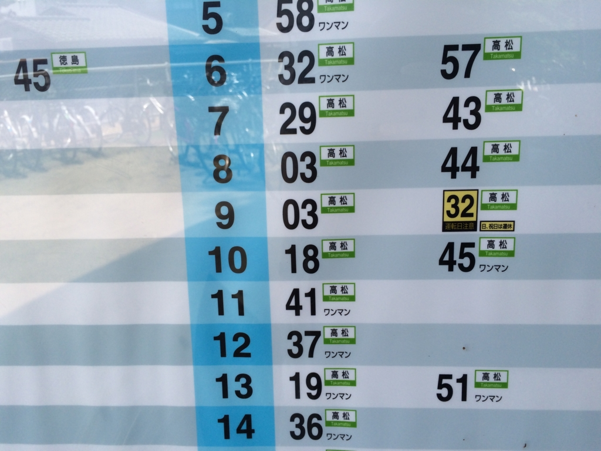

高松：栗林公園で涙ながらに扇子を買う
公開日：
屋島～八栗で歩き回って疲れたので、その日は高松で一泊。ちょっと寝てから夜起きて街へ繰り出し、骨付き鶏でも食べようかと思っていた。
悲劇その一
4時にチェックインして寝て、起きたら12時だった／(＾o＾)＼
さすがにこの時間から街へ繰り出しても……と思い、何も食べずに夜を明かす。とくに門限なんかはないみたいだったけれど、宿の受付はおじいさんだったし、夜中起こすのもかわいそうだので。
悲劇その二
翌朝、お腹が空いたのでうどん屋さんを探してみたのだけど、どこも閉まってた。ガッデム！ うどん県の人は日曜の朝、外でうどん食べないのかな。喫茶店のモーニングみたいなノリで。
それにしても高松は商店街が大きいね。開店前の店の様子を見ながら歩くのはちょっと楽しい。
栗林公園
なにはともあれ、開いてないモノしょうがない。近くにあった“栗林公園”というのをちょっと覗いて、そのまま松山に帰ろうと思った。その前に喫茶店で腹ごしらえ。こういうお店がうちの近所にもあれば、日曜の朝にでも行くのになぁ。日曜の朝は何もしたくないんだ、1,000円払ってでも勝手にごはんが出てきてくれる方がうれしい。
9時ぐらいかな？ 栗林公園の北門にはいる。ここは有料で、大人は410円払わなければならない。
室町の手法を残す石組みの地をもとに、江戸時代、讃岐高松藩の歴代藩主により百年余りの歳月をかけて完成、下屋敷として利用されていました。現在では、特に重要な文化財庭園として国の特別名勝に指定され、また日本に関する旅行ガイド「ミシュラン・グリーンガイド・ジャポン」では「わざわざ旅行する価値がある」を意味する三つ星に格付けされるなど、日本を代表する大名庭園として国内外から高い評価を得ており、その美しい姿が引き継がれ、守られています。
夜のごはんにも振られ、朝のうどんにも振られた僕は、すっかりイジけてしまっていて、「ミシュランガイド？ はん、どうせ外人ウケしそうな大雑把な感じの公園やろ」などと思っていた。
写真右上が現在地。ゆっくり一周するだけで1時間はかかりそう。
思った通りと言っていいのか、最初は割とおおざっぱな感じで、兼六園みたいなのをほのかに期待していたのでちょっとガッカリした（ちなみに、この大きな山は紫雲山と呼ぶのだそうだ。）。まぁ、居心地はいいけどさ。
でも、奥へ進むにつれて趣向を凝らした建物が増えていき……。
「うん、まぁ、なるほどね？ ちょっとはやるかも」という気分になってきた。
悲劇その三
そろそろ歩き疲れたと思ったところに、お土産物屋さん兼お団子屋さんがあったので、少し覗いてみる。その日はちょっと暑かったし、陰に入りたかったのと、ハンカチを忘れてしまっていたようなので、いい感じの汗拭きがあればと思ったのだ。
すると、店のおばちゃんがすっと音もなく近づいてきて、いちいちお土産物の説明をしてくれる。「あぁ、この扇子いいですねぇ……（暑いし買っちゃおうかな？ うげ、5,000円近くするのか）」「そうでしょう、彼女さんへのお土産などにいかがですか？」「あ……彼女いないんで……」「あ……あぁ……」どうするんだよ、この雰囲気！ 頬を伝う汗が、まるで涙のようだ。いたたまれなくなった僕は、手近にあった同じ柄のハンカチをとり、センスとセットで買うことにした。するとおばちゃん、「いい色をお選びですね、センスいいですね」扇子だけにセンスいいってか。いい加減にしろよ（＾ｖ＾）ﾌﾟﾙﾌﾟﾙ
でも、とてもいいおばちゃんで端数をマケてくれた。「もうちょっとマケてくれたら、そのお金でお団子も食べる！」って言ったら、結局5,000円にまでマケてくれた。おかげで美味しいお団子にありつくことができて、心の痛みは少し癒された。
悲劇その四
そんな感じで、池を眺めながらお団子を頬張っていると……なんか若い女の子の集団がやってきて、僕の目の前に群れてキャピキャピしだした。確かその日はトライアスロンの大会か何かをやっていたので（ここにくる途中も交通規制をやっていた）、それに参加した子なのだろうか、まさに体育会系って格好で、あちこちむっちりしておる。「俺がお尻を見ているのではない、おれの視界にお尻が入ってきたのだ」その証拠に、自分は移動もしてないし、目線も動かしていない。まったくの不可抗力なのである。栗林公園も結構だけど、こっちも眼福だなぁ。
そこでふと、なんとなくカメラをとりだしてみた。別にお尻を撮ろうと思ったのではなく、さすがに目の前にお尻があると目のやり場に困るので、今までとった写真でも見返しながら、お尻が去るのを静かに待とうと思ったのだけど――
メモリーカードがぶっ壊れてた ﾅﾝﾃ／(＾o＾)＼ｺｯﾀｲ
せっかく撮った写真は、次元の狭間へ消えてしまったようだ……。なんでこうも悲劇が僕を襲うのか。さすがにちょっと悲しくなってきた。僕は高松と縁のない子なのかもしれないな。
写真が撮れなくなった Nikon 1 V3 はカバンに仕舞い、とくにアテもなく小道をたどると、いい感じの建物がある。これは掬月亭と呼ぶのだそう。きっと南湖に浮かぶ月が掬えそうに見えたりするのだろう。
ここでは茶菓子がでる。自分はさっきお団子を食べたので、まんじゅうと緑茶の安いコース（500円）を頼んだ。ちなみにこの饅頭は「灸まん」と言うのだそう。時を遡ること天保年間、江戸からやってきた小金井小次郎という親分が旅の疲れをいやすために旅籠でお灸を頼んだところ、その親分がイケメンだったので評判になり、女中同士で奪い合いになったのだと言う。結局はじゃんけんか何かでお灸をすえる女中を選んだのだけど、その女中がすえたお灸がずいぶん柔なものだったらしく、親分が「こいつは甘ぇお灸だわー」と言ったのがこのお饅頭の始まり。お饅頭についていた説明を2/3ぐらい読んだところで、「こいつら爆発すればいいのに」と思った。
あと、ここでご一緒したご婦人に掬月亭の見どころなどを案内していただいた。これはブログに書かずに秘密にしておこうと思う。次に自分が来たときに、ドヤ顔で教えてあげたいからだ。ちなみに、このご婦人は高知からいらっしゃったそう。誕生日の月に買える JR の周遊チケットを使えば、安く四国を回れるらしい。そのチケットの存在は知っていたが、実際に使っている人にはあったことがあるはずもなく、実際の使い勝手を聴けたのはよかった。いつか自分も挑戦してみたいものだ。
悲劇その五

そんなこんなで栗林公園を堪能した僕は11:45、すっかり満足して公園をあとにした――高徳線の汽車が栗林公園駅を出たばかりとも知らずに。近くの喫茶店に入ろうかなぁとも思ったけれど、さっき朝ご飯食べたところにもう一回入るのもなんだかな……と思ったので、そのまま1時間弱、木陰で本を読みながら電車を待った。こんなことなら、もうちょっとゆっくりしてもよかったんだが。
13:00 ごろ、高松駅到着。松山行きの特急でお弁当とビールを買って、今回の旅を振り返ったが……やっぱり骨付き鶏とうどんを食いそびれたのは痛い。近いうちにバイクでリベンジしようと思う。
ちなみに駅弁は鰆の炊き込みごはんでした。美味しゅうございました。終わり！